A capstone project: a retrofit kit that turns an ordinary manual wheelchair into a joystick-driven electric one in under 20 seconds — built from a repurposed hoverboard and a secondhand wheelchair.
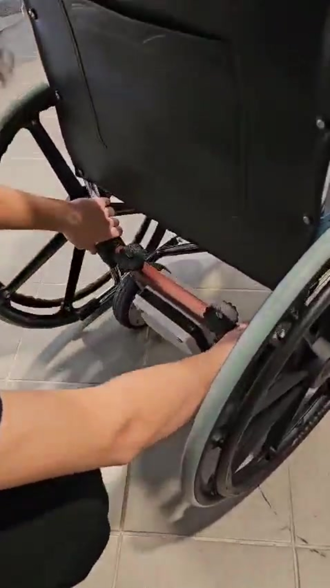
Attaching a drive unit — the entire retrofit takes under 20 seconds per side.
Powered wheelchairs are expensive, and most manual wheelchair users can't easily switch to one. The brief was to close that gap without replacing the chair itself.
Instead of designing a motorized wheelchair from scratch, we designed an add-on kit: a pair of repurposed hoverboard hub motors, custom 3D-printed mounts, and a Bluetooth joystick controller that clamp onto almost any standard manual wheelchair and can be removed just as fast — switching the user between manual and powered modes in under 20 seconds.
Attach or remove both drive units in under 20 seconds, with no permanent modification to the donor wheelchair.
Built around a repurposed hoverboard and a secondhand manual wheelchair, keeping the kit itself cheap to reproduce.
Adjustable mounts to fit most manual wheelchair frames, with a sealed, weatherproof electronics enclosure.
The full sequence: clamping both drive units onto the wheelchair, then driving it by joystick.
The whole kit hangs off two 3D-printed mount assemblies that clip onto the wheelchair's existing frame tubing — no drilling, no permanent fasteners.
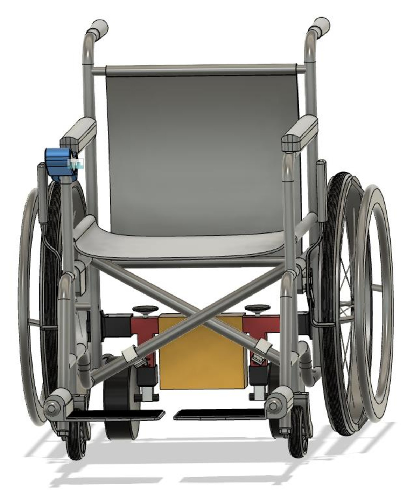
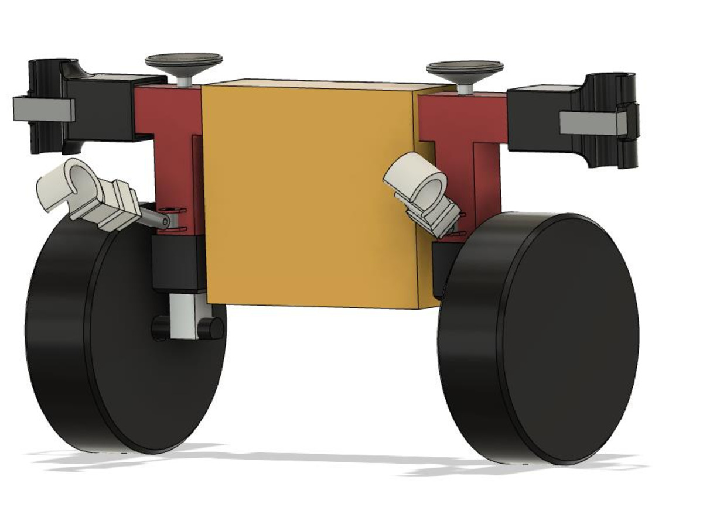
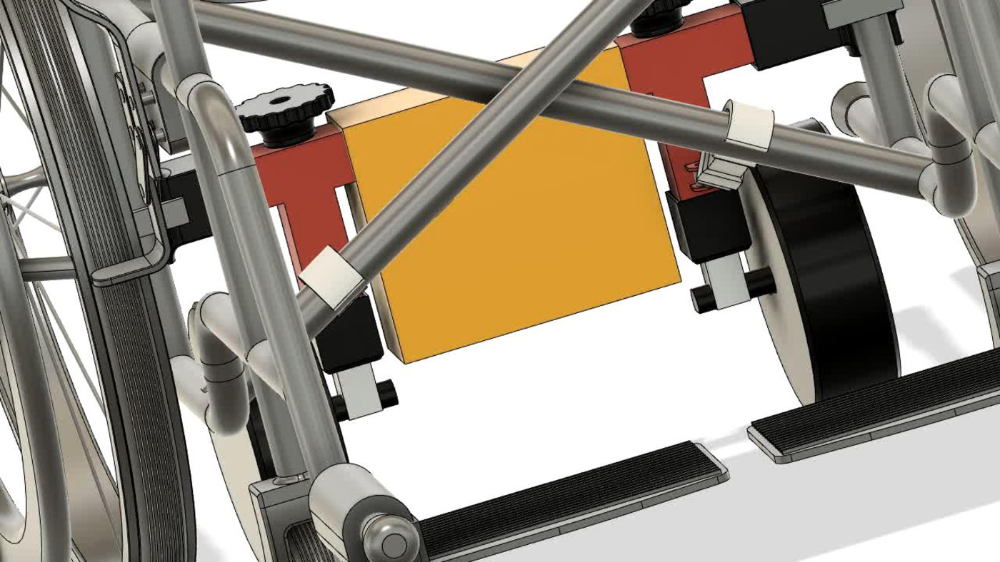
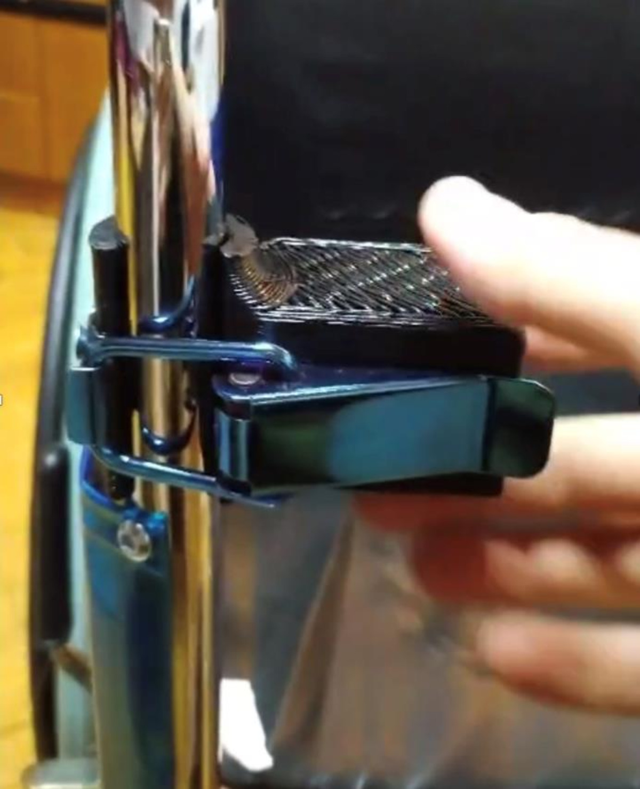
Rather than sourcing new BLDC motors and a motor controller, we salvaged both directly from a hoverboard — its self-balancing electronics already knew how to drive two hub motors smoothly.
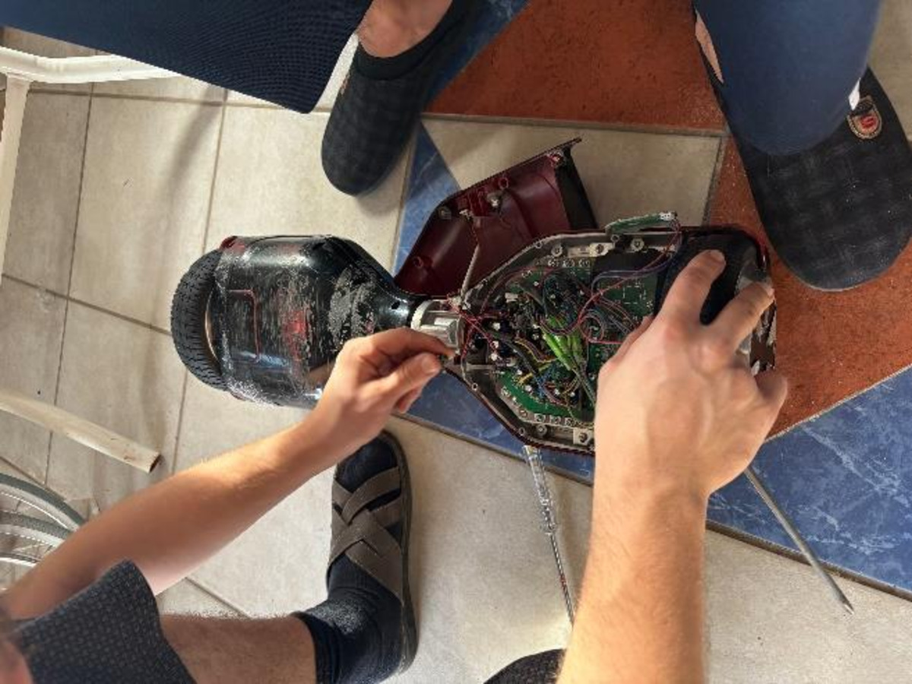
The stock hoverboard controller expects a rider leaning on a self-balancing platform, not a joystick — so we bridged the two with a pair of ESP32 boards. One reads the joystick and transmits over Bluetooth; the other sits in the controller box and feeds that signal into the hoverboard mainboard, which drives the two BLDC motors as normal.
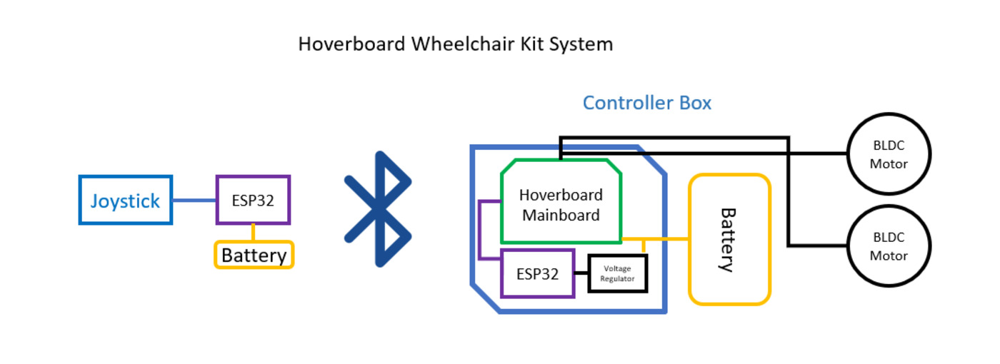
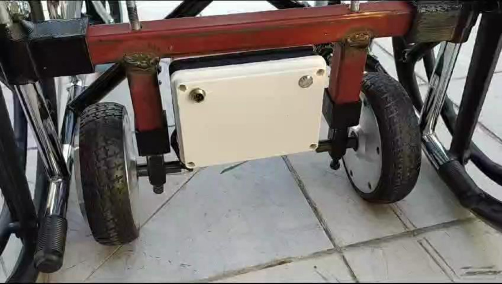
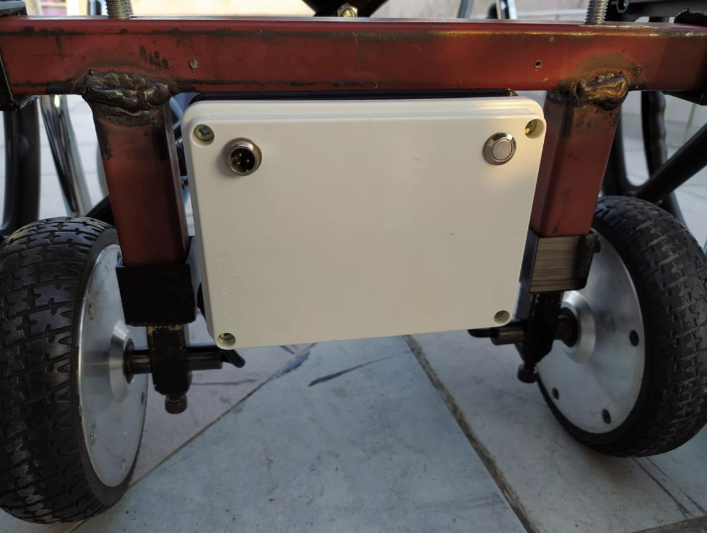
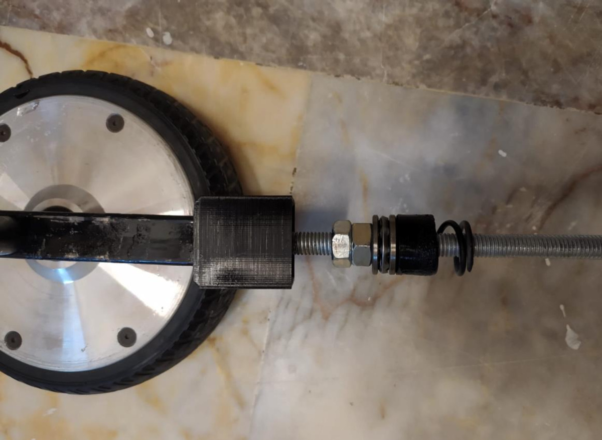
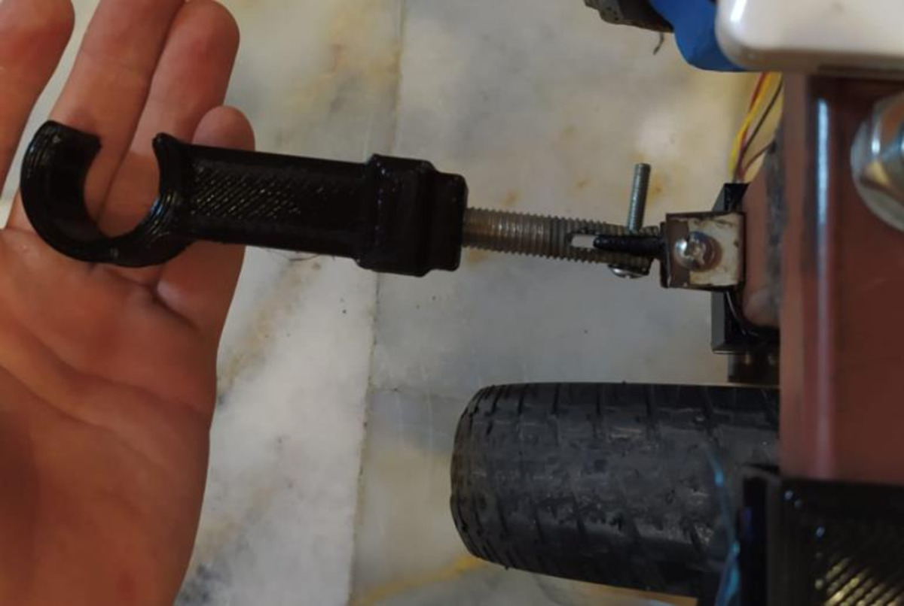
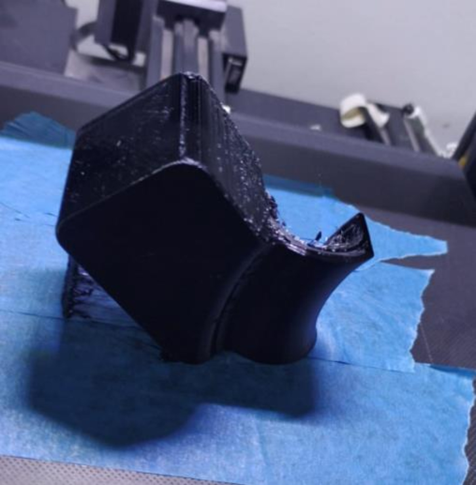
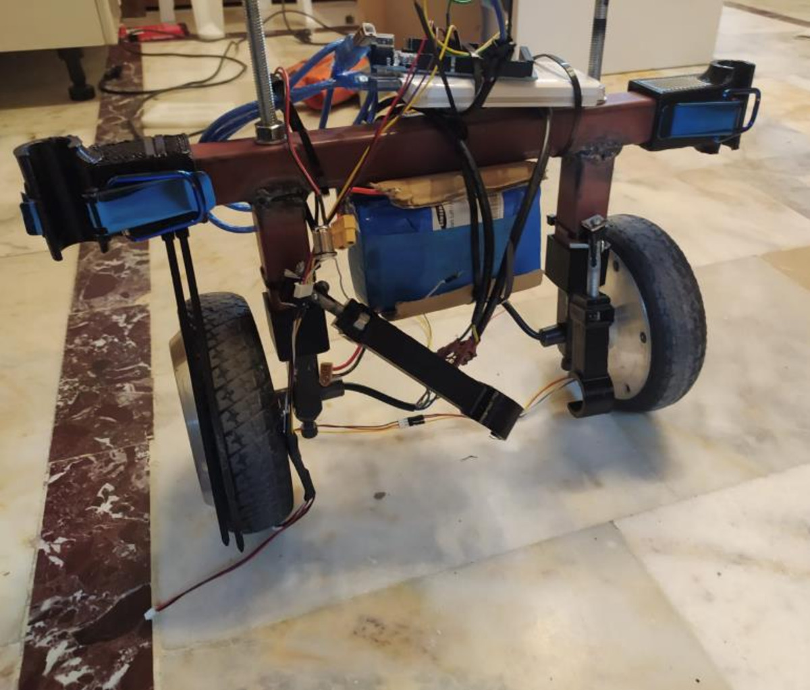
With a 73 kg seated rider, the 17.3 kg wheelchair, and 9 kg of hoverboard motors — 103 kg total — we worked out how that load splits front-to-rear and what force the drive system needs to overcome.
| Quantity | Value |
|---|---|
| Total weight (rider + chair + motors) | 103 kg |
| Front wheel load | ≈ 34.3 kg |
| Rear wheel load (drive side) | ≈ 68.7 kg |
| Rolling friction force | ≈ 20 N |
| Force at target acceleration (1.7 m/s) | ≈ 175 N |
| Net force the drive system must overcome | ≈ 20 kg-equivalent |
We then ran a static structural FEA on the mount assembly under these loads — fixed supports at the frame-clamp points, with 100 N and 150 N loads applied where the motor housings hang off the bracket.
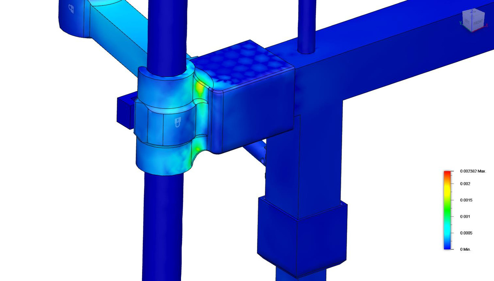
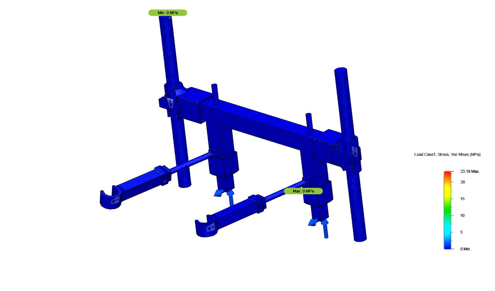
The prototype hit the brief: both drive units attach or detach in under 20 seconds, the kit fits most manual wheelchair frames through its adjustable mounts, and the electronics stayed sealed and functional through testing. The structural analysis confirmed the mounts hold up comfortably under the rider's weight, with stress and displacement well inside safe margins.
The obvious next steps are refining the mount for a wider range of frame geometries, and iterating on battery life and ride comfort with real users — the kind of feedback that's hard to get from a single capstone semester.